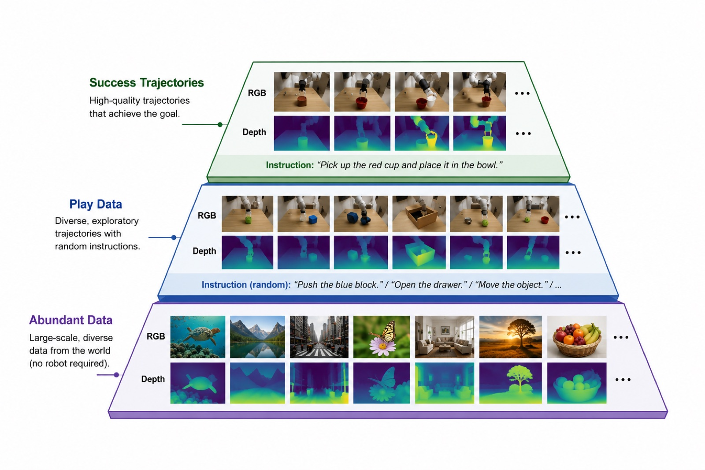

KAIST AI
* equal contribution
The dominant paradigm for learned robot control maps observations and instructions directly to actions, but such policies are reactive and carry no explicit model of how the world responds. World-action models instead couple action selection with a predictive model of physics, letting the robot imagine the outcome of an action before executing it. Recent video-based world-action models, however, predict RGB futures only, so their learned representation captures 3D geometry only implicitly and imperfectly — a weak inductive bias for contact-rich manipulation.
Prior work injects geometry into vision-language-action models or, concurrently, predicts depth jointly within a world-action model, but enhancing the base video model itself for geometry, before it becomes a policy, remains under-explored. We close this gap with a two-stage, geometry-aware recipe. First, we mid-train the base video model to predict depth alongside RGB, enhancing its geometric capability from cheap video before it becomes a policy. Second, we fine-tune it into a world-action model that jointly predicts action, RGB, and depth, so 3D structure becomes a property of the shared representation.
Depth is treated as pseudo-RGB and reuses the existing video VAE, so no architectural change is required, and at inference the depth slots can be fed as blank placeholders — the policy needs no depth sensor and the gain is a pure representation-level effect. On 24 RoboCasa manipulation tasks, depth co-training alone (without mid-training) raises mean success from 60.8% to 69.0% (+8.2 points). Because 3D-awareness is a property of the shared representation, it can be acquired from abundant, cheap, non-expert video with depth: geometry-aware mid-training, including from out-of-distribution in-the-wild data, lifts success to 79.2% (+18.4). Together these results indicate that geometry-aware prediction, acquired through cheap mid-training, is a promising objective for world-action models.
Our lever is to directly enhance the geometric capability of the model: we supervise 3D structure in the model's prediction target, strengthening the backbone's existing but imperfect 3D awareness rather than instilling it from scratch. Rather than perturbing layers at inference time or adding a separate depth branch, we extend the prediction target with depth, in two stages. In both stages depth requires no architectural change: each depth map is treated as pseudo-RGB, clipped to [0.05, 3.0] m and tiled to three channels so it reuses the existing video VAE, and depth is denoised as additional latent slots rather than fed as input.
Robot demonstration data is scarce and expensive, and is therefore a poor source from which to learn general 3D geometry. Because geometry is a property of the video representation rather than of the action policy, we can decouple learning it from learning control: in a mid-training stage we leverage abundant, cheap data that carries depth but no actions, such as large-scale in-the-wild video with estimated depth and robot play trajectories. Concretely, before the model is turned into a policy, we mid-train the pretrained video backbone to predict per-frame depth alongside RGB, with no action or value targets. By forcing the model to denoise current- and future-frame depth jointly with the RGB frames, this stage surfaces and strengthens the backbone's latent but imperfect 3D awareness.
We then convert the geometry-enhanced video model into a world-action model: we add the action, the proprioceptive state, and the value to its prediction target and fine-tune on the target tasks. The per-step state grows from 11 to 17 latent slots — six new depth slots carry three current-frame and three future-frame depth maps (one per camera). The depth slots are denoised, not merely conditioned on, so geometry becomes a property of the shared representation rather than an auxiliary output. At inference the depth slots can be fed as blank placeholders, so the policy incurs no dependence on a depth sensor.

We evaluate on 24 RoboCasa manipulation tasks spanning pick-and-place, drawers, doors, faucets, stoves, microwaves, and coffee preparation, each with roughly 50 human demonstrations. We report success rate, averaged over 50 rollouts per task, at training iteration 24k. All models use the same hyperparameters, and at inference depth slots are fed as blank placeholders — the policy uses no depth sensor.
| Model | Success | Δ vs. A |
|---|---|---|
| Cosmos Policy (A) | 60.8 | 0 |
| + depth co-train (B) | 69.0 | +8.2 |
| + mid-train (ScanNet++) | 75.5 | +14.7 |
| + mid-train (mg1000) | 77.0 | +16.2 |
| + mid-train (mg1000+ScanNet++) | 79.2 | +18.4 |
Crucially, ScanNet++ alone — despite being out-of-distribution in-the-wild data with no robot or action content — also improves success, showing that the geometric capability transfers across domains.
| Task | A | B | C |
|---|---|---|---|
| PnPCounterToCab | 74 | 80 | 86 |
| PnPCabToCounter | 36 | 48 | 84 |
| PnPCounterToSink | 56 | 64 | 70 |
| PnPSinkToCounter | 52 | 60 | 68 |
| PnPCounterToMicrowave | 26 | 40 | 58 |
| PnPMicrowaveToCounter | 52 | 64 | 76 |
| PnPCounterToStove | 96 | 96 | 98 |
| PnPStoveToCounter | 82 | 86 | 92 |
| OpenSingleDoor | 82 | 86 | 92 |
| CloseSingleDoor | 98 | 98 | 100 |
| OpenDoubleDoor | 48 | 60 | 74 |
| CloseDoubleDoor | 38 | 52 | 67 |
| OpenDrawer | 72 | 80 | 90 |
| CloseDrawer | 74 | 78 | 84 |
| TurnOnStove | 78 | 82 | 88 |
| TurnOffStove | 98 | 98 | 100 |
| TurnOnSinkFaucet | 57 | 66 | 78 |
| TurnOffSinkFaucet | 22 | 40 | 60 |
| TurnSinkSpout | 60 | 68 | 78 |
| CoffeeSetupMug | 42 | 54 | 68 |
| CoffeeServeMug | 76 | 82 | 88 |
| CoffeePressButton | 26 | 44 | 66 |
| TurnOnMicrowave | 82 | 86 | 92 |
| TurnOffMicrowave | 30 | 44 | 64 |
| Mean | 60.8 | 69.0 | 79.2 |
Per-task gains are consistent, with no task regressing below the baseline — and the mean improves even though depth adds no information at test time, confirming that the benefit is a representation-level effect of co-training.
We measure geometry in the representation directly. We freeze each model's backbone, extract hidden features at a fixed denoising step and transformer block, and train a linear probe to regress metric depth from those frozen features. Crucially, we probe the shared spatial features, never the model's explicit depth output slots, so the comparison reflects what the representation encodes rather than what a depth decoder produces.
| Model | AbsRel ↓ | RMSE ↓ | δ1 ↑ |
|---|---|---|---|
| Video backbone (pre-WAM) | 0.21 | 0.42 | 71.5 |
| Cosmos Policy (RGB only, A) | 0.20 | 0.41 | 72.8 |
| + Unified depth (B) | 0.14 | 0.30 | 83.0 |
| + Mid-training (C) | 0.11 | 0.25 | 88.5 |
RGB-only world-action training does not meaningfully improve the backbone's geometry, since its objective rewards only 2D appearance. Depth supervision — and especially cheap-data mid-training — raises probe accuracy, and the probe ordering tracks the manipulation-success ordering.
| Variant | Cur. | Fut. | RGB | Succ. (%) |
|---|---|---|---|---|
| Full (Baseline B) | ✓ | ✓ | ✓ | 69.0 |
| Current only | ✓ | ✗ | ✓ | 68.0 |
| Future only | ✗ | ✓ | ✓ | 65.0 |
| Depth only | ✓ | ✓ | ✗ | 66.5 |
All signals contribute. Current-frame depth matters most: removing it costs the largest drop, whereas removing future-frame depth costs little. Depth is a useful target on its own — predicting only depth, with no RGB target, still reaches 66.5%, above the RGB-only baseline at 60.8%.
The six extra depth slots raise inference latency. To address this we adopt Asynchronous Noise Scheduling (ANS), which denoises each slot at its own noise level so the depth slots need not be fully solved before an action is read out, recovering speed. At inference this yields a two-phase schedule: the video denoises over its own steps while the action chunk reaches a clean state early, after which the video continues action-conditioned, so actions are available early. The fixed overhead of the larger latent (17 vs. 11 slots) amortizes from +34% at a single denoising step to +8% at 25 steps; ANS targets closing this remaining gap, and success parity under ANS is still pending.
The paper is under review; a citable reference will be posted here once it is public.
@misc{hyung2026geometryaware,
title = {Geometry-Aware Mid-Training for World-Action Models},
author = {Hyung, Junha and Jang, Hyojin and Choo, Jaegul},
year = {2026},
note = {Under review. Citation to be updated upon release.}
}